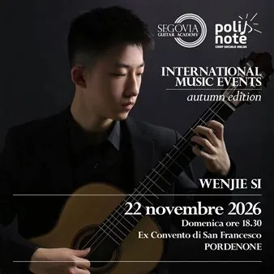

dom 22 nov · dalle 18:30
Segovia Guitar Week 2026 - Wenjie Si
Si Wenjie ha iniziato lo studio della chitarra classica all’età di otto anni e, a dodici, è stato ammesso alla Scuola Media annessa al Conservatorio di Musica del Sichuan. Ha ricevuto la guida e il plauso di celebri maestri e compositori della chitarra, tra cui Leo Brouwer…
 Indicazioni
Indicazioni
- Costi e prenotazioni
- Costo non indicato · Prenotazione non indicata
- Programma
- Programma da verificare. Apri la fonte ufficiale per orari e possibili aggiornamenti.
- In caso di maltempo
- Nessuna indicazione specifica pubblicata.
- Note
- Acquisito automaticamente dalla fonte.
L’EVENTO
Descrizione completa
Si Wenjie ha iniziato lo studio della chitarra classica all’età di otto anni e, a dodici, è stato ammesso alla Scuola Media annessa al Conservatorio di Musica del Sichuan. Ha ricevuto la guida e il plauso di celebri maestri e compositori della chitarra, tra cui Leo Brouwer, David Russell e Pepe Romero. Ha vinto numerosi importanti concorsi in Cina, ottenendo inoltre riconoscimenti speciali quali il premio per la migliore interpretazione di Bach e quello per la migliore interpretazione di musica contemporanea. Nel 2019 ha conquistato il Primo Premio nella categoria Giovani al Concorso Internazionale di Chitarra di Iserlohn, in Germania, e nel 2020 è stato invitato a esibirsi nel concerto inaugurale dell’Iserlohn International Guitar Festival. Nel 2022 ha ottenuto il Primo Premio nella categoria Chitarra, Bayan e Fisarmonica alla 7ª Russian International Music Olympic Competition. A soli tredici anni ha eseguito con successo in recital l’integrale dei 12 Studi di Heitor VillaLobos e il Concierto de Aranjuez, ottenendo dal pubblico ben due richieste di bis. È stato invitato a esibirsi in numerosi festival in Cina e all’estero. Attualmente studia presso l’Università di Musica e Arti Performative di Graz, in Austria, sotto la guida di Paolo Pegoraro.
Ingresso libero
Informazioni:
Tel. 349 815 3953
E-mail: info@segoviaguitaracademy.com
IL PROGRAMMA
Programma e orari
Appuntamenti raccolti dalle fonti elencate. Dove manca un orario, non è ancora disponibile in questa scheda.
Programma pubblicato
- Dal 2026-11-22 al 2026-11-22
INFORMAZIONI UTILI
Prima di partire
- Controllare la fonte prima di partire.
ORGANIZZAZIONE